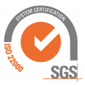
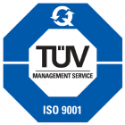
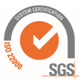
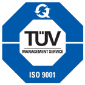

Products
Yunmei company specialized in the production of steel transmission poles 35-220kV and is an excellent supplier of State Grid Worldwide.


Our Power Starts With You
Every line is unique. That means trust, experience and dependability become as important as design, manufacturing and delivery. From steel tapered and H-frames, to concrete and patented steel/concrete hybrid poles, our industry-leading engineering team can create custom power transmission poles designed especially for your line. We back our designs with real-world testing to ensure we create the most reliable transmission pole for you. We design manufacture and coat steel, concrete, and hybrid transmission poles to support any voltage class. Backed by over four decades of experience and a global network of manufacturing facilities, Valmont Utility can offer you:
Any design of your choice
This enables customization of any line segment with structures that are optimized for the environment and creating a line that is more cost effective.
The Newmark® Standard of Excellence
Newmark transmission towers offer the versatility and light weight of steel, the low maintenance and durability of concrete (spun and static cast).
Exceptional Ease of Installation
When compared to other types of structures, the speed and ease of installation, concrete and hybrid poles increases its value in construction cost savings.
Uniform Material Strength
Steel and concrete offer uniform material strength throughout the entire structure, providing more consistency and predictability than wood.